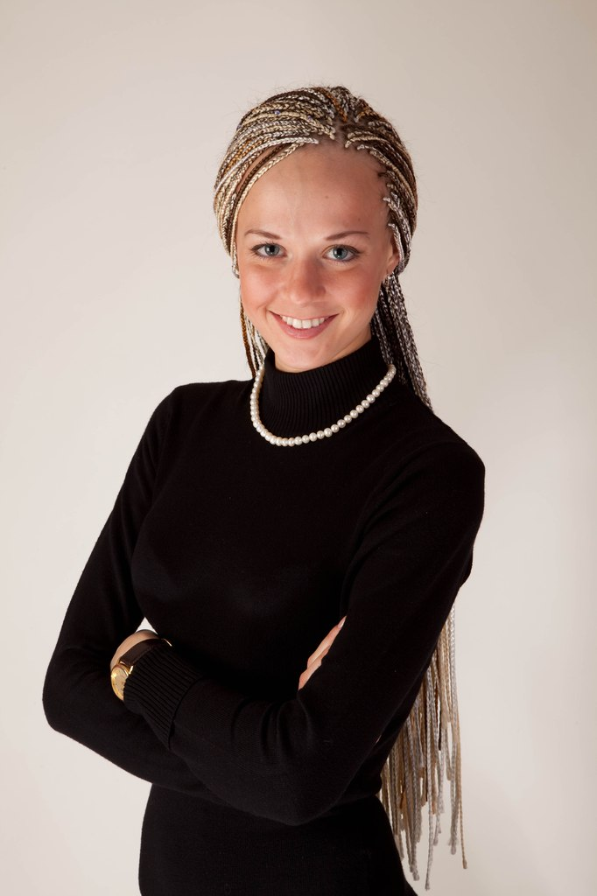

Обо мне
Здравствуйте. Меня зовут Марина Ксенофонтова.
Я стилист по прическам и мастер афроплетения с многолетним опытом. C 2003 года я занимаюсь любимым делом, и в 2006 году стала победительницей конкурса «Афроплетение» Международного фестиваля красоты «Невские берега».
За это время я разработала собственную технологию плетения «Зизи». Моя технология позволяет существенно сократить время плетения, количество используемых искусственных материалов и нагрузку на корни волос. - Например, для заплетения 500 косичек мы потратим не более 4 часов, и результатом будут красивые, аккуратные и эффектные косички.
Моя работа никогда не была для меня рутиной, моя работа – это мое увлечение, способ творческой реализации и возможность общения с моими любимыми клиентками. A aфриканские косички - это ультрамодная и практичная прическа, позволяющая нам выглядеть красиво в повседневной жизни, а также в поездке или путешествии, в любую погоду и время суток. - Это способ изменить свой образ без вреда для своих волос.
Милые девушки, приходите ко мне, я обещаю вам индивидуальный подход, учту все особенности вашей внешности и типа волос, дам все необходимые советы и рекомендации по уходу и поддержанию прически - сделаю все, чтобы вы выглядели самыми модными и красивыми!